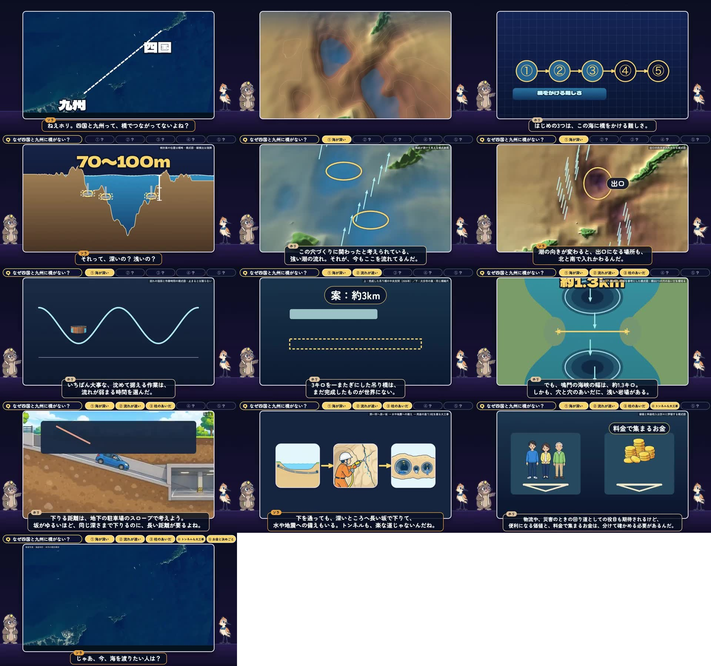
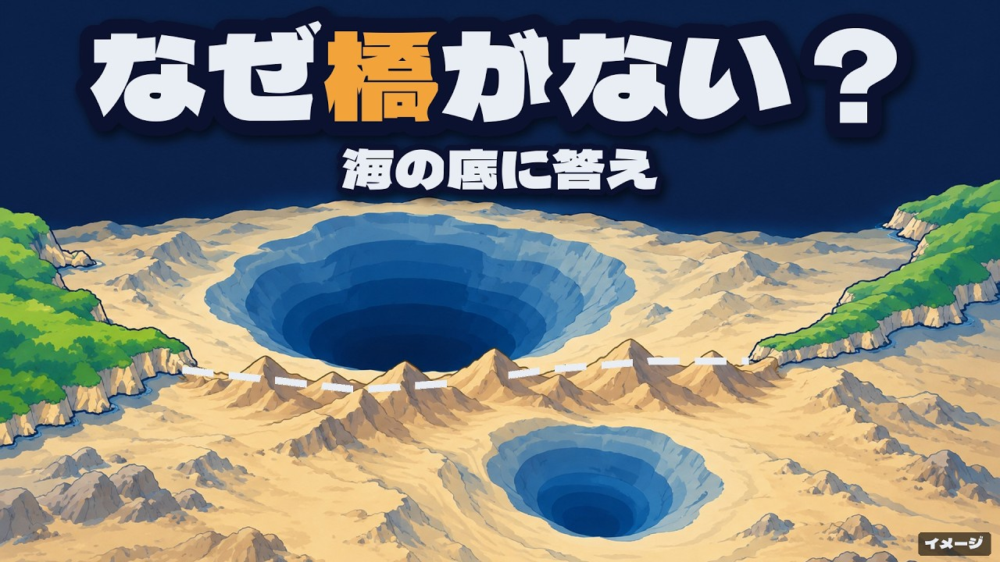
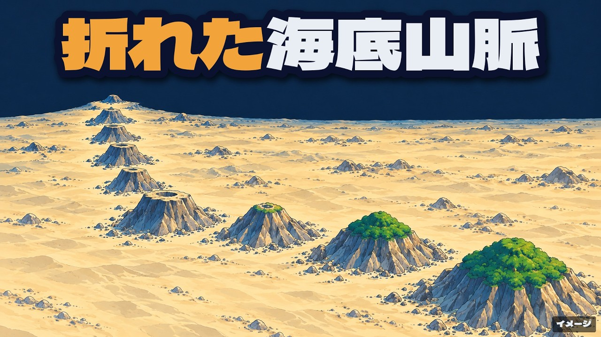

Trending Research · Phân tích kênh đối thủ · 19/10/2026
1. Kênh làm về chủ đề gì? Địa lý – địa chất – địa hình Nhật Bản, giải thích bằng bản đồ 3D và lát cắt. Mỗi tập lấy một câu hỏi "tại sao" mà người xem tự kiểm chứng được bằng mắt trên bản đồ (vì sao Shikoku và Kyushu không có cầu, vì sao Hawaii nằm giữa Thái Bình Dương, vì sao rãnh sâu 6.000 m không thấy trên bản đồ), rồi rút nước biển hoặc bổ đôi địa hình để cho thấy thứ bình thường bị che. Hai nhân vật dẫn chuyện: chuột chũi Hori (rành lòng đất) và chim di trú Sora (nhìn bản đồ từ trên cao). Độ dài 18:49 và 21:34, đăng cách nhau 1,5 ngày.
2. Tại sao nhiều view thế? Vì kênh bán được một thứ mà người xem không tự tưởng tượng nổi: hình dạng thật của đáy biển / lòng đất. Tiêu đề đặt câu hỏi ai cũng thấy mà không ai trả lời được, thumbnail cho thấy luôn "chỗ giấu đáp án", và giây thứ 43 đã trả một phần đáp án (hố sâu 460 m) — không hứa hẹn suông. Cộng thêm: đây là làn sóng định dạng mới — 4 kênh cùng công thức lập trong tháng 9–10/2026 đều đang bùng nổ, tức thuật toán đang đói định dạng này, không phải may mắn riêng của một kênh.
Toàn bộ số dưới đây lấy trực tiếp từ YouTube Data API lúc 16:30 ngày 19/10/2026, không ước lượng.
| Video | Đăng | Tuổi | View | View/giờ | Like | Cmt | Dài |
|---|---|---|---|---|---|---|---|
| Vì sao Shikoku và Kyushu không có cầu? Rút nước biển ra xem 四国と九州になぜ橋がない？海を抜いて見てみた |
16/10 | 81,4 h | 1.143.239 | 14.045 | 0,30 % | 467 | 18:49 |
| Vì sao Hawaii nằm giữa Thái Bình Dương? Rút nước biển ra xem 太平洋の真ん中になぜハワイ？海を抜いて見てみた |
17/10 | 45,4 h | 179.502 | 3.954 | 0,30 % | 42 | 21:34 |
channels.list trả tổng view kênh = 954.237,
nhưng riêng video 1 đã 1.143.239 view — tổng kênh nhỏ hơn một video.
Đây là độ trễ đồng bộ của trường thống kê cấp kênh, không phải lỗi dữ liệu của tôi.
Vì vậy mọi phân tích dưới đây dùng số cấp video, không dùng tổng kênh.
Cùng hiện tượng ở ジオレンズ (kênh 861.910, nhưng video 1 đã 1.047.888).
Mô tả kênh tự khai nguyên văn: "Biển dưới đáy, dưới mặt đất, hình dạng thuở trước. Kênh làm cho những hình khối ẩn trong bản đồ trở nên nhìn thấy được, để giải các câu hỏi 'tại sao'."
Người dẫn: "Hori — chuột chũi rành lòng đất, và Sora — chim di trú đã nhìn bản đồ từ trên cao."
Chủ đề nhận: hình thành địa hình, eo biển và đảo, độ lệch của phố và dân số, đường và đường sắt không nối được, hình dạng đất thuở trước.
Chủ đề từ chối: chính trị và tranh chấp lãnh thổ, tin ngay sau thiên tai, quảng cáo du lịch.
Nguyên tắc: "Bản đồ và con số làm từ tư liệu công và dữ liệu mở, nguồn ghi ở phần mô tả từng video. Sơ đồ và hình minh hoạ đều hiển thị rõ trên màn hình. Phát hiện sai thì đính chính ở phần mô tả. Giọng là giọng tổng hợp, nhân vật là ảnh sinh ra."
Không phải "kênh kiến thức" chung chung. Đây là một định dạng rất hẹp, và chính cái hẹp đó làm nên hiệu quả.
Đây là mục lục kênh tự đăng trong mô tả video, không phải tôi suy ra. Nhìn mốc thời gian là thấy cấu trúc.
TẬP 1 — VÌ SAO SHIKOKU VÀ KYUSHU KHÔNG CÓ CẦU (18:49)
| Mốc | Nội dung | Chức năng |
|---|---|---|
| 0:00 | Gần thế mà vì sao không có cầu? | Nghịch lý |
| 1:51 | Lý do ① Biển sâu | Trả đáp án sớm |
| 4:05 | Lý do ② Dòng chảy tạo ra hố | |
| 6:02 | Lý do ② Có dòng chảy thì hỏng việc gì? | Đào sâu |
| 7:55 | Lý do ③ Khoảng cách giữa các trụ lớn (khác Naruto) | So sánh |
| 10:56 | Lý do ④ Đường hầm cũng là đại công trình | Lật giả thuyết |
| 13:55 | Lý do ⑤ Tiền và quy định | Chốt kinh tế |
| 16:47 | Đáp án, và những chuyến phà đang nối biển hôm nay | Đóng bằng thực tại |
TẬP 2 — VÌ SAO HAWAII NẰM GIỮA THÁI BÌNH DƯƠNG (21:34)
| Mốc | Nội dung | Chức năng |
|---|---|---|
| 0:00 | Giữa Thái Bình Dương, vì sao Hawaii? | Nghịch lý |
| 1:16 | Thứ nhìn thấy chỉ là phần đỉnh | Đổi góc nhìn |
| 1:56 | Đo tuổi bằng "đồng hồ đá" | Phương pháp |
| 3:35 | Cái gì phải dịch chuyển để thành một dãy? | Cơ chế |
| 4:52 | Kiểm trên bản đồ: khoảng cách và tuổi | Kiểm chứng 1 |
| 7:35 | Núi ngầm có đỉnh phẳng | Chi tiết lạ |
| 9:25 | Núi ngầm phía bắc mang tên Nhật | Móc bản địa |
| 10:53 | Giả thuyết A: mảng đổi hướng | Giả thuyết |
| 11:46 | Kiểm chứng 1: từ tính còn trong đá | Kiểm chứng 2 |
| 15:40 | Kiểm chứng 2: dãy núi ngầm Louisville cùng mảng | Kiểm chứng 3 |
| 18:22 | Đáp án: vì sao dãy bị gãy khúc | Trả đáp án |
| 20:31 | Tổng kết | Đóng |
Hai nhân vật cố định, phân vai rõ: Hori (chuột chũi) — chuyên gia lòng đất; Sora (chim di trú) — người đặt câu hỏi, đóng vai khán giả. Kênh ghi rõ "出演：ホリ（モグラ）、ソラ（渡り鳥）" — tức là dàn diễn viên cố định, không phải nhân vật mỗi tập một khác. Toàn bộ lời dẫn là hội thoại hai người, không có narrator đọc số liệu. Đây là lý do phụ đề burn-in đọc như truyện, không như bài giảng.
Kênh tự khai trong mô tả video: "Lời thoại dùng Gemini TTS, nhân vật và hình minh hoạ dùng tính năng sinh ảnh của OpenAI." Đây là khai báo của chính kênh, không phải tôi suy đoán từ giọng đọc.
Tải nguyên video về, cắt 13 khung ở nhiều mốc, đọc phụ đề burn-in — không suy diễn từ thumbnail.



"Làm cũng lỗ nặng, không duy trì nổi. Phà là đúng rồi." 作っても大赤字で維持できないわな。フェリーが正解。 comment tập 1 · 467 comment
"Nhìn cái địa hình thì đúng là nó đang đòi người ta nối lại thật." 見た目が繋げてくれ、と言わんばかりの地形ではある。 comment tập 1
"Eo Kanmon rộng 700 m, sâu 14 m — bằng một ga tàu điện ngầm. Còn eo Hōyo rộng gấp 20, sâu gấp 20, lại không có người ở. Không có cửa nào để có lãi." 関門海峡は幅700m、深さ14m、地下鉄1駅と同じ規模。幅20倍深さ20倍、人が住んで無い豊予海峡で採算が取れる見込みは無いですよね comment tập 1 · 34 lượt thích — khán giả tự bổ sung số liệu
"Cái chỗ 'gãy khúc' ấy kích thích trí tưởng tượng thật. Ước gì một ngày có bằng chứng quyết định, hoặc dựng được mô hình dự báo hợp lý." 「折れ曲がり」の部分は想像力を掻き立てられますよね！いつの日か、決定的な証拠が見つかったり合理的な予測モデルが確立されることを願っています。 comment tập 2
Đọc 20 comment đầu mỗi tập (theo lượt thích): không có comment nào chê "bịa" hay "sai kiến thức". Chủ đề bàn là chi phí – hiệu quả, phà, địa chấn, và các giả thuyết địa chất. Tập 1 có 4 comment hàng đầu đều là đồng tình có lý lẽ (277 / 242 / 181 / 130 lượt thích) — dấu hiệu kênh thắng được lòng tin, nên comment kéo dài phần thảo luận chứ không phải phần tranh cãi. Riêng tập 2 có comment xếp hạng cao nhất là "最近のAIはすごいな" (Dạo này AI ghê thật) — khán giả nhận ra đây là kênh AI và vẫn xem, không quay lưng.
Xếp theo mức đóng góp thật, không theo thứ tự trình bày.
Người xem không bấm vì muốn học địa chất. Họ bấm vì biết câu trả lời tồn tại nhưng không thể tưởng tượng nổi nó trông thế nào. Đáy biển sâu 460 m dưới eo Hōyo: ai cũng có thể hiểu khái niệm, không ai hình dung được hình dạng.
Kênh giải quyết đúng khoảng trống đó bằng một thao tác duy nhất lặp lại mỗi tập: rút nước. Đây là "định dạng" chứ không phải "chủ đề" — và định dạng mới là thứ khiến người ta bấm.
Tiêu đề: 「四国と九州になぜ橋がない？」. Thumbnail: 「なぜ橋がない？」. Cùng một câu hỏi, thumbnail ngắn hơn để đọc trong 0,4 giây. Không có chuyện tiêu đề hứa A, thumbnail vẽ B — lỗi phổ biến nhất của kênh Việt/Nhật clone.
Thêm một chi tiết đáng học: thumbnail vẽ ra cây cầu không tồn tại bằng một nét đứt nối hai mỏm đất — người xem thấy "cái đang thiếu" chứ không chỉ thấy "cái đang có". Đây là mẹo đảo cực: bình thường thumbnail khoe thứ đã có, ở đây khoe thứ không có.
Rất nhiều kênh mystery giữ đáp án tới cuối và bị tụt retention. Tập này trả ngay một mảnh: hố sâu 460 m, cao bằng tháp Tokyo lật ngược. Người xem được thưởng sớm → tin là kênh sẽ trả tiếp → ở lại.
Sau đó mới mở 5 lý do. Cấu trúc "thưởng trước – đào sau" là thứ giữ chân ở phút 12.
"Shikoku–Kyushu không có cầu" là kiến thức thụ động gần như mọi người Nhật có: họ đã đi phà, đã thấy bản đồ. Kênh không dạy kiến thức mới, kênh đặt câu hỏi lên kiến thức cũ. Loại này có CTR cao vì không đòi người xem đầu tư trước.
Đối chiếu tập 2: "vì sao Hawaii ở giữa Thái Bình Dương" — người Nhật cũng biết Hawaii, nhưng không có trải nghiệm trực tiếp nào về khoảng cách 6.100 km ấy. Kết quả: 179 nghìn thay vì 1,14 triệu. Cùng công thức, khác mức gần gũi → khác 6,4 lần.
Giây thứ 2 đã là một câu nói với người khác, không phải "Hôm nay chúng ta sẽ cùng tìm hiểu…". Người xem bị kéo vào một cuộc nói chuyện đang diễn ra, không phải một bài giảng đã bắt đầu.
Hai nhân vật còn có chức năng kỹ thuật: Sora hỏi đúng câu khán giả đang nghĩ ("Vậy tránh hố mà bắc cầu thì sao?"), Hori trả lời — nên không cần đoạn "như các bạn đã biết".
Mỗi video có 10–14 nguồn ghi rõ trong mô tả (GEBCO, 国土地理院, bảo tàng đứt gãy, nghị trình). Mọi hình mô phỏng dán nhãn "模式", mọi ảnh AI dán nhãn "イメージ".
Tác dụng kép: (a) khán giả Nhật khó tính chấp nhận kênh AI vì thấy tác giả không giấu; (b) nội dung có thể tái sử dụng làm tư liệu — tăng khả năng được đề xuất trong watch session dài.
Bốn kênh cùng công thức, đều mới, đều bùng nổ trong 6 tuần: 本気の雑学 (tạo 21/9), 断面ジャパン (22/9), ジオレンズ (12/10), 深読み地図 (15/10). Video 1,05 triệu của ジオレンズ đăng sau video của 深読み地図 chỉ 5,5 giờ (16/10 05:30 so với 00:00 UTC) và cũng vượt 1 triệu. Hai kênh độc lập, cùng một đề tài "địa chất Nhật nhìn bằng dữ liệu độ cao", cùng nổ trong cùng một ngày.
Nghĩa là: đây không phải hiện tượng cá biệt của một kênh. Có một làn sóng "3D data-explainer tiếng Nhật" đang được hệ thống đẩy. Đây là thông tin có giá trị nhất cho quyết định làm hay không làm.
Không phải clip ngắn. Hai tập 18:49 và 21:34. Với nội dung có 5 lý do lồng nhau, 18 phút vẫn không lê thê. Watch-time tuyệt đối cao trên một video mới là thứ thuật toán dùng để quyết định đẩy tiếp — cùng lượt xem, video 19 phút cho watch-time gấp ~2,4 lần clip 8 phút. Lưu ý: đây là suy luận từ cơ chế xếp hạng, không phải số đo retention của kênh (không lấy được).
Đây là phần quan trọng hơn "tại sao nhiều view": so sánh để biết cái gì là công thức chung, cái gì là lợi thế riêng.
| Kênh | Tuổi | Sub | Video | Tổng view | View/ngày | Nội dung | Trạng thái |
|---|---|---|---|---|---|---|---|
| 深読み地図 Bản đồ đọc sâu |
3,9 d | 3.020 | 2 | 1.322.741 | 343.000 | Địa hình + eo biển + đảo, rút nước / cắt lát | bùng nổ |
| ジオレンズ GeoLens — địa lý bằng dữ liệu |
6,9 d | 2.410 | 2 | 1.072.164 | 155.386 | Địa chất Nhật: đứt gãy, biển tiến Jōmon | bùng nổ |
| 断面ジャパン Mặt cắt Nhật Bản |
27 d | 2.250 | 9 | 676.825 | 25.067 | Cắt lát máy móc & công trình: Shinkansen, hầm Seikan, đền Izumo | không đều |
| 本気の雑学 Kiến thức nghiêm túc |
28 d | 244 | 7 | 161.221 | 5.704 | Câu hỏi "nếu như": rút cạn đại dương, vũ trụ, tiến hoá | 1 hit / 6 fail |
| 江戸見聞録 Ghi chép Edo |
1.405 d | 171.000 | 90 | 34,4 tr | 24.527 | Lịch sử Edo — kênh trưởng thành, không cùng định dạng | ổn định |
Quét 5 truy vấn InnerTube (cửa sổ "tháng này") ra 55 video unique thuộc 39 kênh khác nhau trong vùng chủ đề địa lý / địa hình / bản đồ. Trong đó chỉ 8 kênh có từ 2 video trở lên: なぜの地図帖 6, 絵で見る歴史ラボ 4, 経済の地図 3, 地理を解く 3, ジオトリ 2, れきしと地政 2, 地形の謎ラボ 2, 深読み地図 2. Nghĩa là 31/39 kênh chỉ có đúng 1 video lọt vào kết quả — phần lớn là kênh mới thử một lần rồi im.
Top view trong 30 ngày: 1,14 tr · 1,05 tr · 976k · 642k · 501k · 259k · 251k · 215k · 201k · 185k · 179k. Đọc ra: ngách chưa bão hoà về view — vẫn có 4 video vượt 600k trong một tháng, và các kênh đứng đầu chỉ có 2–6 video. Nhưng đã bão hoà về số người thử: 39 kênh trong 30 ngày, phần đa chết yểu (nhiều kênh dưới 300 view). Cửa sổ đang hẹp dần: người vào sớm và làm đúng định dạng thắng, người vào sau làm na ná sẽ không có view.
Đánh giá thẳng theo 3 lớp: cái dễ, cái cần pipeline mới, cái không copy được.
[Địa danh A] と [Địa danh B] になぜ [thứ không tồn tại]？[thao tác] てみた. Vế hỏi + vế thao tác, không có tính từ cảm xúc.Không tô hồng. Ba con số dưới đây nói rằng kênh chưa chứng minh được khả năng lặp lại.
ch_mult hay trend theo quy trình chuẩn.
Mọi kết luận về "kênh có công thức" ở đây là suy luận từ 1 hit + 1 video tụt, không phải kết luận thống kê.
Đối chiếu 断面ジャパン — kênh đã có 9 video nên nhìn được hình dạng thật: 259k / 152k / 123k / 107k / 52k / 10k / 1,3k / 952 / 869. Tức là đúng 4 video về công trình lớn (Shinkansen, thành Edo, đền Izumo, hầm Seikan) mới nổ; 5 video về đồ vật nhỏ và hệ thống kỹ thuật (đồng xu 500 yên, bồn cầu, máy bán hàng, tàu đệm từ) chết. Đây là bằng chứng cho thấy tiêu chí chọn đề tài quan trọng hơn chất lượng sản xuất.
Khuyến nghị của tôi: lựa chọn 3 trước, nhưng chuẩn bị sẵn phương án 2. Lý do: video 2 tụt 84 % là tín hiệu đủ mạnh để chưa nên đổ nguồn lực vào pipeline 3D (rào cản lớn nhất). Nhưng công thức hook thì đã đủ chắc để thử ngay ở lane có sẵn, chi phí gần 0.